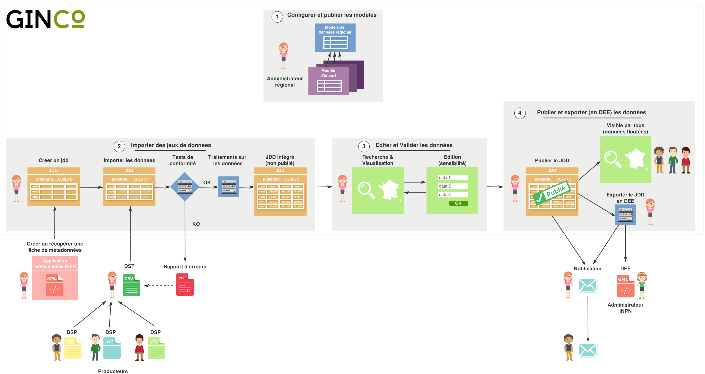
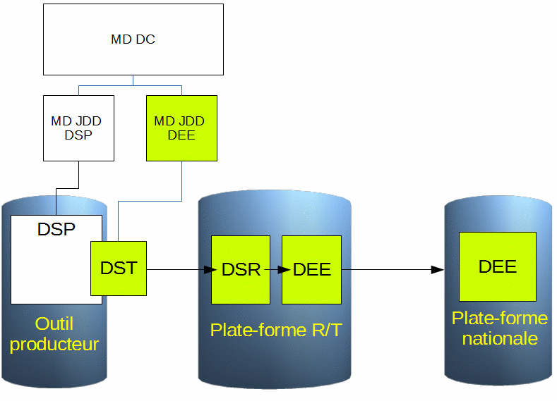
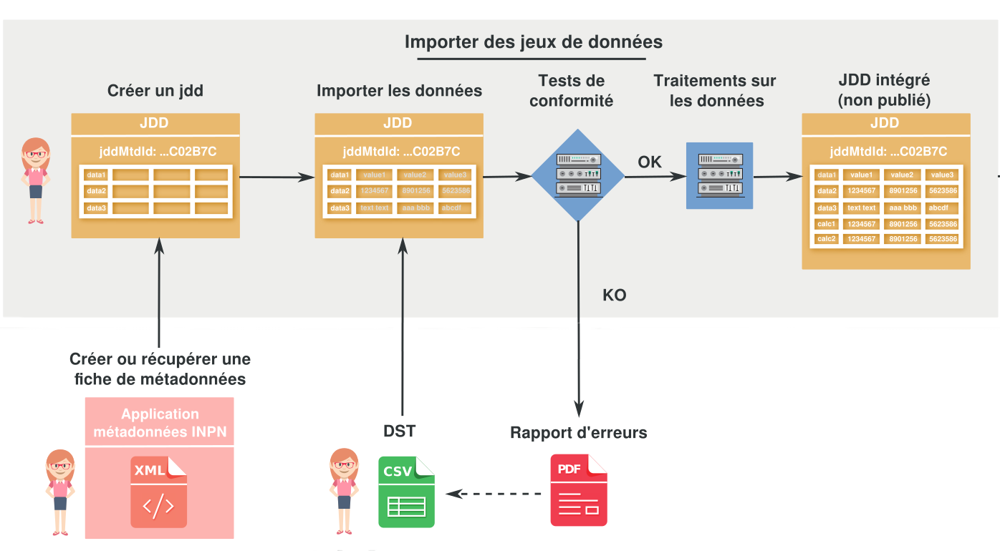
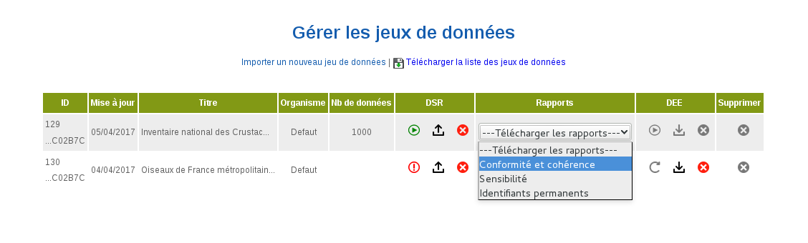
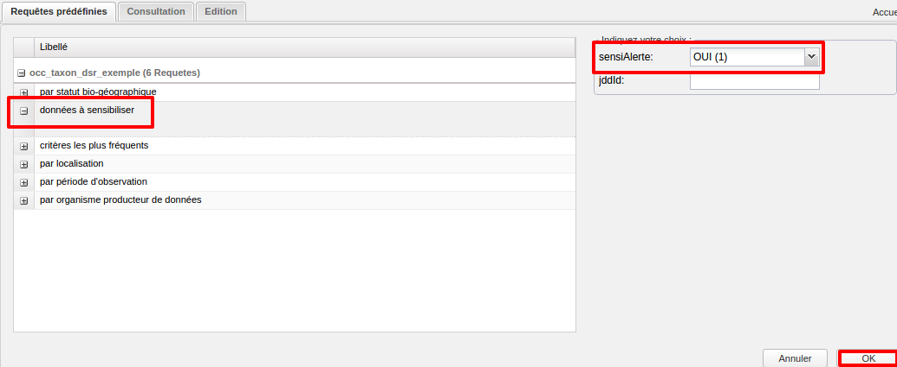
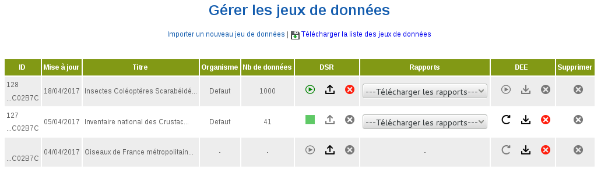

Utilisation des plateformes
Formation des administrateurs régionaux
3 mai 2017 - Séverine Candelier (IGN)
Plan
- Introduction
- Présentation
- Documentation
- Fonctionnalités de Ginco
- Workflow
- Terminologie
- Configuration des modèles (de données, d'import)
- Importer des jeux de données
- La gestion des jeux de données
- Requêter / Visualiser / Editer les données
- Utilisateurs, rôles et permissions
- Evolutions prévues
Les plateformes Ginco
+ la plateforme thématique "Occurences de Taxons"
+ 14 instances de test
Ginco - Gestion d'Information Naturaliste Collaborative et Ouverte - est une application web ministérielle open-source assurant les principales fonctions de plate-forme régionale ou thématique du SINP.


Les fonctionnalités de Ginco
- La configuration de modèles de données naturalistes régionaux, cohérents avec le standard SINP,
- L'import de jeux de données au format CSV,
- Des traitements sur les jeux de données:
- calcul des rattachements administratifs,
- de la sensibilité des observations,
- contrôles de conformité au standard SINP.
- La visualisation et le requêtage des données,
- Le floutage des données sensibles et privées, en fonction des droits des utilisateurs,
- L'édition manuelle de la sensibilité des données,
- L'export des données au format d'échange du SINP (DEE).
- Des notifications aux producteurs de données lors de l'intégration, la publication, et la transmission à l'INPN de leurs données.
Le workflow Ginco
Terminologie : DSP/DST/DSR/DEE
DSP = Données Sources Producteur
Les DSP sont les données créées et manipulées par les producteurs, au format et avec les outils de leur choix. Elles ne sont pas forcément partagées en totalité dans le cadre du SINP. Elles sont décrites (ou non) par des métadonnées spécifiques à l’initiative de chaque producteur.
DST = Données Sources Transmises
Ce sont les données que les producteurs transmettent aux platesformes R/T. Pour Ginco, pour l'instant, elles sont forcément au format CSV, avec des contraintes de format sur certains champs. Elles représentent tout ou partie des DSP.
DSR = Données Sources Régionales
Ce sont les données sources standardisées au niveau régional et rassemblées dans un format pivot entre la DSP et la DEE, le standard régional de données. Il doit impérativement être compatible avec le format national DEE et comporte a minima les mêmes champs obligatoires.
DEE = Données Elémentaires d'Echange
Données au format d'échange défini par le standard SINP. Il existe(ra) un format de DEE par thématique du SINP (occurrences de taxons, habitats, espaces protégés,...)
Terminologie : DSP/DST/DSR/DEE
Différences entre DSP/DSR/DEE
Principe: les DEE doivent être conformes au standard SINP, par exemple comporter les champs obligatoires du standard. --> Les contraintes de conformité se répercutent sur la DSP, mais: Certains champs sont calculés/attribués automatiquement par Ginco --> La DSR est un format pivot.
Exemples:
- sensible, sensiNiveau
- organismeTransformation, dEEdateTransformation
- departementCalcule, codeDepartementCalcule, etc...
Plan
- Introduction
- Configuration des modèles (de données, d'import)
- Les modèles de données
- Le modèle standard "Occurences de taxon"
- Les modèles d'import
- Configurer les modèles régionaux
- Démo
- Importer des jeux de données
- La gestion des jeux de données
- Requêter / Visualiser / Editer les données
- Utilisateurs, rôles et permissions
- Evolutions prévues
Les modèles de données
Un modèle de données est une description d’un ensemble de tables, de leurs champs et attributs et de leurs relations hiérarchiques.
Le configurateur Ginco permet de construire des modèles de données, qui détermineront la structure dans la base de données des données importées, mais aussi le comportement de l'application (champs calculés, modifiables par l'utilisateur...).
Le modèle de données standard
"Occurence de taxons"
Chaque plateforme GINCO, régionale ou thématique, est livrée avec un modèle de données de base. Ce modèle contient tous les champs nécessaires à l’export des données en DEE et au fonctionnement de la plateforme.
Il ne comporte qu'une seule table (observation), dont les champs correspondent à ceux du standard DEE ayant été "mis à plat".
Cette table comporte les 93 champs du standard + 10 champs techniques.
Sur les 103, 15 sont obligatoires, et 18 calculés.
5 sont obligatoires et calculés (donc non obligatoires à la livraison).
Les modèles d'import
Un modèle d’import est une description d’un ensemble de fichiers (CSV pour l'instant), de leurs colonnes, et des relations (mappings) entre les colonnes et les champs des tables du modèle de données associé.
Les mappings fichier/tables sont décrits en fonction de l'ordre des colonnes (on attribue un nom à chaque colonne du fichier, mais c'est sa position qui compte) :
- la colonne 1 du CSV correspond au champ "identifiantOrigine" du modèle,
- la colonne 2 du CSV correspond au champ "cdNom" du modèle,
- etc...
Chaque plateforme GINCO, régionale ou thématique, est livrée avec le modèle d’import correspondant au modèle standard DSR Occurence de Taxons.
On peut créer autant de modèles d'import que l'on veut pour chaque modèle de données.
Configurer les modèles régionaux
- Commencer par dupliquer le modèle de données standard DSR occ Tax (Il est impossible de créer un modèle à partir de zéro, c'est un garde-fou de l'application).
- Rajouter des champs additionnels si nécessaires (présents dans les données des producteurs mais pas dans le standard)
- Créer un ou plusieurs modèles d'import correspondant aux fichiers de données à intégrer.
- Pour chaque modèle d'import, commencer par ajouter les champs obligatoires non calculés du modèle de données, puis rajouter les autres champs présents dans les fichiers de données.
- Régler les positions des colonnes du fichier d'import.
- Définir les mappings fichier - table en utilisant d'abord l'outil de mapping automatique.
- Publier les modèles de données et d'import.
Recommandations
Créer un seul modèle de données régional par type de données comparables (ex : un pour les occurences de taxons, un pour les habitats...).
Car on ne peut requêter et visualiser ensemble que les données d'un même modèle de données.
Mais créer autant de modèles d'import que nécessaire, en fonction de la variété des fichiers à importer.
Plan
- Introduction
- Configuration des modèles (de données, d'import)
- Importer des jeux de données
- Workflow de l'import
- Démo
- Format du fichier d'import
- Les référentiels utilisés
- Tests de conformité
- Traitements de standardisation des données
- La gestion des jeux de données
- Requêter / Visualiser / Editer les données
- Utilisateurs, rôles et permissions
- Evolutions prévues
Workflow de l'import
Format du fichier d'import
Ces informations sont disponibles sur la documentation en ligne.
Le fichier
- Format CSV, UTF8 sans BOM, séparateur = point-virgule.
- 1 fichier = 1 jeu de données, 1 ligne = 1 donnée.
- Même nombre de champs que le modèle d'import, même vides
→ ajouter une ligne d'en-tête débutant par "// " (commentaire) - Champs dans le même ordre que le fichier d'import
- Champs obligatoires dans le modèle d'import non vides.
Les champs
- Dates et dates/heures: Format défini dans le modèle dimport. Par défaut:
yyyy-MM-dd'T'HH:mmZ. Voir la description du format de dates. - Booléens: Les valeurs “1”, “true” et “TRUE” sont équivalentes à “vrai”; toutes les autres valeurs sont équivalentes à “faux”.
- Tableaux: Certains champs peuvent comporter une liste de valeurs, dont le type peut être quelconque.
Celles-ci doivent être séparées par des virgules, facultativement entourées par des accolades.
Par exemple, pour le codedepartement :
23,36,86,87ou{23,36,86,87} - Géométries: au format WKT. Tous SRID acceptés, à préciser à l'import. Types acceptés:
points (
POINT(5.35 48.41)), multipoints, lines, multilines, polygons, multipolygons. - Codes (référentiels, nomenclatures): valeur exacte du référentiel ou de la nomenclature. Sensible à la casse.
Les référentiels
Les champs du standard suivants utilisent des référentiels (≠ nomenclatures) :
| Champ | Référentiel | Version (dans Ginco V1.0.1) | Où le trouver |
|---|---|---|---|
codeCommune, nomCommune |
GEOFLA | 2015 | http://professionnels.ign.fr/geofla |
codeDepartement |
GEOFLA | 2015 | http://professionnels.ign.fr/geofla |
codeMaille |
Grille nationale 10x10km | 2011 et 2012 | Disponible sur l'INPN |
codeEn, typeEn |
Base INPN | Extrait de mars 2017 | Sur l'INPN extrait utilisé dans Ginco |
codeME |
- | - | Implémenté comme un champ texte |
cdNom, cdRef |
TAXREF | 10.0 | Disponible sur l'INPN |
codeHabRef, codeHabitat |
HABREF et les autres typologies Habitats | HABREF: 2.0 (maj vers 3.1 prévue prochainement) |
Disponibles sur l'INPN |
codeIDCNP |
- | - | Implémenté comme un champ texte, et obsolète |
Les nomenclatures sont disponibles sur le site des standards du SINP (dossier "Nomenclatures" dans l'onglet de gauche du standard en ligne).
Tests de conformité effectués lors de l'import
L'application effectue deux types de contrôles (improprement appelés conformité et cohérence) :
- des vérifications de format sur le fichier et sur chaque champ correspondant à la description du fichier d'import. Voir la liste complète.
- des contrôles inter-champs / inter-lignes garantissant la conformité des données au standard (liste complète).
Les erreurs remontent dans le "Rapport de Conformité et cohérence". Exemple de rapport d'erreur
Contrôles de conformité au standard réalisés :
- Présence ou absence de "Concepts" du standard (champs obligatoires conditionnels).
→ Si un ou plusieurs des attributs d'un concept sont fournis, alors tous ses attributs obligatoires doivent être fournis. - Cardinalité des concepts (nombre d'éléments des tableaux identiques).
→ Si un concept est fourni n fois, alors tous ses attributs implémentés par un type tableau doivent comporter n éléments.
Exemple :codeCommune, nomCommune. - Géoréférencement manquant / Plusieurs géoréférencements
- Version Taxref manquante, Référence bibliographique manquante
- Incohérence entre les champs de preuve, Incohérence entre les champs d’habitat
- PreuveNumerique n’est pas une url
- Période d’observation
Traitements de standardisation des données effectués lors de l'import
- Report de l'identifiant de métadonnée dans chaque donnée,
- Attribution d'un identifiant permanent pour chaque donnée si il n'est pas fourni.
C'est un UUID (format8-4-4-4-12, exemple123e4567-e89b-12d3-a456-426655440000). - Calcul des rattachements administratifs,
- Calcul de la sensibilité des observations.
Calcul des rattachement administratifs
Condition
Un et un seul géoréférencement doit être fourni parmi :
- la géométrie précise,
- une ou plusieurs communes,
- une ou plusieurs mailles 10x10km,
- un ou plusieurs départements.
Dans ces trois derniers cas, le champ typeInfoGeo de l'entité qui géoréférence doit valoir 1.
Dans tous les cas, dès lors qu'un géoréférencement est fourni, l'observation est rattachée à toutes les autres couches, inférieures et supérieures.
géométrie < commune < maille < département
→ les champs techniques suivants sont remplis :
codeCommuneCalcule, nomCommuneCalcule, codeMailleCalcule, codeDepartementCalcule.
Ces champs ne font pas partie du standard et ne sont pas transmis dans les DEE.
→ détaillé dans la note Géoréférencement des oc currences d'observation de taxons et représentation cartographique dans Ginco.
Calcul des rattachement administratifs
Cas: géoréférencement par une géométrie
Calcul des rattachement administratifs
Cas: géoréférencement par une entité administrative (maille)
Calcul de la sensibilité des observations
Données d'entrée
L'application attribue à chaque observation un niveau de sensibilité qui détermine sa précision de diffusion:
| 0 | Non sensible |
| 1 | Sensible: diffusion à la commune |
| 2 | Sensible: diffusion à la maille |
| 3 | Sensible: diffusion au département |
| 4 | Sensible: aucune diffusion (cas exceptionnel) |
Pour chaque observation, Ginco détermine la sensibilité en fonction des attributs suivants :
cdNom, cdRef, occStatutBiologique, jourDateFin, codeDepartementCalcule,
Et utilise le référentiel de sensibilité.
Le référentiel de sensibilité
Il est fourni à GINCO par la plateforme nationale (INPN). Il aggrége une liste nationale et des listes régionales, qui remplacent complètement la liste nationale pour chaque région concernée.
Le référentiel est constitué d'une ligne par combinaison
département x espèce sensible (x statut biologique) (x commentaire) :
CD_DEPT |
code INSEE du département |
CD_NOM |
code du taxon valide |
NOM_CITE |
nom du taxon cité dans la liste |
CD_OCC_STATUT_BIO. |
statut biologique pour lequel s’applique la règle de sensibilité |
DUREE |
durée d’application en années |
AUTRE |
commentaire conditionnant la sensibilité |
CODAGE |
code de sensibilité |
CD_SL |
id. de la liste de sensibilité |
Calcul de la sensibilité des observations
Résultats et cas de la sensibilité manuelle
Les attributs DEE suivants sont remplis :
sensiNiveau |
le niveau entre 0 et 4 |
sensible |
booléen, 0 ou 1 (sensiNiveau > 0) |
sensiDateAttribution |
date d'attribution de la sensibilité |
sensiReferentiel |
le référentiel de sensibilité utilisé (national, régional) |
sensiVersionReferentiel |
sa version |
Ainsi que les champs techniques suivants :
sensiAlerte |
booléen, mis à '1' si la ligne du référentiel de sensibilité appliquée comporte un commentaire calcul automatique impossible. |
sensiManuelle |
booléen, vaut '0' lors du calcul, est mis à '1' lorsque la sensibilité a été éditée manuellement. |
Quand sensiAlerte vaut '1', la sensibilité doit être éditée manuellement par l'administrateur.
Rapport de sensibilité
Requêter et éditer manuellement les données à sensibiliser
Plan
- Introduction
- Configuration des modèles (de données, d'import)
- Importer des jeux de données
- La gestion des jeux de données
- Les états de la DSR et de la DEE
- Générerer les DEE
- Démo
- Requêter / Visualiser / Editer les données
- Utilisateurs, rôles et permissions
- Evolutions prévues
Les états de la DSR et de la DEE
Les DSR peuvent être :
- vides (jeu de données créé sans import),
- en erreur (import avec erreur),
- importées et non publiées,
- publiées (disponibles à la consultation et exportables en DEE),
- supprimées.
Plan
- Introduction
- Configuration des modèles (de données, d'import)
- Importer des jeux de données
- La gestion des jeux de données
- Requêter / Visualiser / Editer les données → Démo
- Le requêteur
- Visualisation des résultats: vue carte / vue tableau
- L'export CSV
- Visualisation par "bacs" et floutage des données sensibles/privées
- Les requêtes enregistrées et prédéfinies
- Utilisateurs, rôles et permissions
- Evolutions prévues
Plan
- Introduction
- Configuration des modèles (de données, d'import)
- Importer des jeux de données
- La gestion des jeux de données
- Requêter / Visualiser / Editer les données
- Utilisateurs, rôles et permissions → Démo
- Evolutions prévues
Evolutions de Ginco prévues d'ici fin 2017
- Des évolutions du processus d'import de données, pour :
- rendre les erreurs de conformité au standard non bloquantes pour l'import, mais bloquantes pour l'export DEE (découpler l'import et les tests de conformité),
- remonter toutes les erreurs (bloquantes/non bloquantes) en une seule fois dans le rapport,
- importer des shapefile,
- importer des DEE (gml), provenant par exemple de la plateforme nationale.
- Traitement par lots des données.
- Améliorer le formulaire d'édition manuelle de la sensibilité.
- Brancher Ginco sur l'annuaire du SINP (organismes et personnes).
- Export des shapefile.
- Prendre en compte l'évolution des standards et référentiels.
Conclusion : pour démarrer l'utilisation de Ginco
- Pensez à utiliser l'aide en ligne : https://ginco.naturefrance.fr, en particulier la documentation utilisateur.
- N'hésitez pas à communiquer avec l'équipe Ginco :
- via le Redmine : http://redmine-sinp.ign.fr
- par mail: pour toute question technique, pour les questions métier.
Questions ?
Présentation du TP
- Première partie : utilisation d'un fichier d'import préparé
- Deuxième partie : utilisation de votre propre fichier d'import